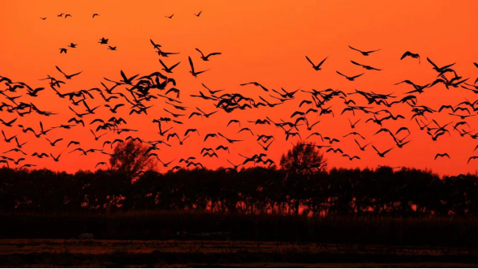

挠力河国家级自然保护区
Naoli River National Nature Reserve
黑龙江挠力河国家级自然保护区，地处三江平原腹地，成立于2002年，地跨佳木斯富锦市、双鸭山宝清县和饶河县。保护区前身是长林岛、雁窝岛、挠力河三个省级自然保护区和七里沁河一个总局级（地市级）自然保护区。保护区类型属于“自然生态系统类”中的“内陆湿地与水域生态系统类型”，国家特大型湿地保护区。总面积160601公顷。东西长165公里，最宽处13.5公里，最窄处4公里。
2023年11月30日，国家林业和草原局公布《陆生野生动物重要栖息地名录（第一批）》，黑龙江挠力河候鸟重要栖息地入选。挠力河国家级自然保护区主要保护对象是以水生和陆栖生物及其生境共同形成的湿地和水域生态系统。鸟类有大雁、绿头鸭、丹顶鹤、白鹭、苍鹭、罗纹鸭、红嘴鸥、东方白鹳等。
